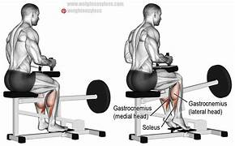

Pec Deck
Dips
Cable Crossovers
Rope Triceps Pushdown
Straight Bar Cable Tricep Pushdown
Singel arm overhead dumbbell tricep extension
Dag 2: Rygg og Biceps
Close Grip Lat Pulldown
Smith Machine Barbell Rows
Lat Pulldown
Seated Close Grip Rows
Rope Pull Overs

Dumbell Bicep Curls
Hammer Bicep Curls

Dag 3: Skuldre
Rear Delt Flyes Machine
Rear Delt Flyes with Dumbells
Dumbell Lateral Raises
Singel arm Lateral Raises
Seated Dumbell Press Heavy Wight

Hammer Grip Shoulder Press
Rope Shrugs on Cable Machine
Dumbell Shrugs
Dag 4: Ben og Mage
Leg Extension
Leg Curls
Squat
RDL (Romanian Deadlift)
Hack Squat

Smith Machine Lunges
Seated Calf Raises
Standing Calf Raises
Crunches
Hanging Leg Raises
Dag 5: Triceps og Biceps
Close gripe tricep Pushdown Cable Machine
Rope tricep overhead extension
Singel arm tricep Pushdown
Bicep Curls Machine
Barbell Bicep Curls (Normal Grip)
Rope Hammer Curls